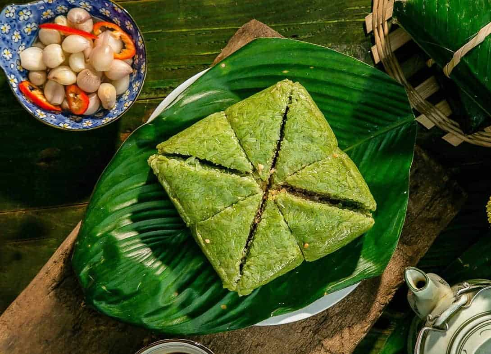

Banh Chung - The Traditional Tet Recipe of Vietnam

Description
Bánh Chưng is a traditional Vietnamese cake made from glutinous rice, mung beans, and pork, wrapped in green dong leaves and boiled for hours. It is a symbol of the Vietnamese Lunar New Year (Tết) and is deeply connected to the country’s agricultural roots and family traditions.
According to legend, Bánh Chưng was created by Prince Lang Liêu during the Hung Kings’ era to represent the Earth, with the square shape symbolizing stability and harmony. Today, making Bánh Chưng is often a family activity, where members gather to prepare, wrap, and cook the cakes together.
Ingredients
- 1 kg glutinous rice (sticky rice)
- 500 g mung beans (peeled and split)
- 500 g pork belly (with skin)
- 2 tablespoons fish sauce
- 1 teaspoon ground black pepper
- Salt, to taste
- Fresh dong leaves (or banana leaves as an alternative)
- Cooking twine or strips of bamboo
Steps
- Soak the glutinous rice in water for at least 6 hours or overnight. Drain and season lightly with salt.
- Soak mung beans for at least 4 hours, then steam or boil until soft. Mash into a smooth paste and season with salt.
- Cut pork belly into thick slices, season with fish sauce, pepper, and salt. Let it marinate for at least 30 minutes.
- Prepare and clean the dong leaves. Layer them to form a square base.
- Place a layer of rice, followed by mung beans, pork belly, another layer of mung beans, and finally a top layer of rice.
- Fold the leaves tightly into a square shape, securing with cooking twine.
- Boil the cakes fully submerged in water for 6–8 hours, topping up water as needed.
- Remove the cakes, press them under a weight for a few hours to set the shape, then let them cool before unwrapping.
Return to The Odin Recipes List